2. HTML에서 ARIA 사용에 대한 참고 사항
2.1 ARIA 사용의 첫 번째 규칙
요소의 용도를 변경하고 ARIA 역할, 상태 또는 속성을 추가하여 접근 가능하게 만드는 대신 이미 내장되어 있는 의미와 동작을 갖춘 기본 HTML 요소 [HTML51] 또는 속성을 사용할 수 있다면 그렇게 하세요.
어떤 상황에서 이것이 불가능합니까?
- 기능이 HTML [HTML51]에서 사용 가능하지만 구현되지 않았거나 구현되었지만 접근성 지원이 없는 경우입니다.
- 시각적 디자인 제약으로 인해 특정 기본 요소의 사용이 배제되는 경우, 요소의 스타일을 필요에 따라 지정할 수 없기 때문입니다.
- 현재 HTML에서 사용할 수 없는 기능인 경우.
2.2 ARIA 사용의 두 번째 규칙
꼭 필요한 경우가 아니면 기본 의미를 변경하지 마세요.
예: 개발자가 탭인 제목을 작성하려고 합니다.
다음을 수행하지 마십시오.
<h2 role=tab>heading tab</h2>
이렇게 하십시오.
<div role=tab><h2>heading tab</h2></div>
비대화형 요소가 대화형 요소의 기반으로 사용되는 경우 개발자는 ARIA를 사용하여 의미를 추가 하고 스크립팅을 사용하여 적절한 상호 작용 동작을 추가해야 합니다. 예를 들어 버튼의 경우 (기본 HTML) 버튼을 사용하는 것이 훨씬 더 좋고 쉽습니다.
2.3 ARIA 사용의 세 번째 규칙
모든 대화형 ARIA 컨트롤은 키보드로 사용할 수 있어야 합니다.
사용자가 클릭, 탭, 드래그, 드롭, 슬라이드 또는 스크롤할 수 있는 위젯을 생성하는 경우 사용자는 위젯으로 이동하고 키보드를 사용하여 동등한 작업을 수행할 수도 있어야 합니다.
모든 대화형 위젯은 해당되는 경우 표준 키 입력 또는 키 입력 조합에 응답하도록 스크립트를 작성해야 합니다.
예를 들어, role=button 요소를 사용하려면 포커스를 받을 수 있어야 하고 사용자는 enter(WIN OS에서) 또는 return(MAC OS)와 space키를 모두 사용하여 요소와 관련된 작업을 활성화할 수 있어야 합니다.
[wai-aria-practices-1.1]의 디자인 패턴 및 위젯과 키보드 인터페이스 개발 섹션을 참조하세요.
2.4 ARIA 사용의 네 번째 규칙
포커스 가능한 요소에는 role="presentation" 또는 aria-hidden="true"를 사용하지 마세요.
포커스 가능한 요소에 이들 중 하나를 사용하면 일부 사용자는 '없는 것(nothing)'에 집중하게 됩니다.
다음을 수행하지 마십시오.
<button role=presentation>press me</button>
다음을 수행하지 마십시오.
<button aria-hidden="true">press me</button>
표시되는 대화형 요소의 부모/조상 요소에 aria-hidden를 적용하면 대화형 요소도 숨겨지므로 다음을 수행하지 마세요.
<div aria-hidden="true">
<button>press me</button>
</div>
대화형 요소를 볼 수 없거나 상호작용할 수 없는 경우, 포커스를 받을 수 없는 한 aria-hidden를 적용할 수 있습니다. 예를 들어:
button {opacity:0}
<button tabindex="-1" aria-hidden="true">press me</button>
대화형 요소(요소 자체 또는 요소의 상위 요소 중 하나)가 display:none 또는 visibility:hidden를 사용하여 숨겨진 경우 포커스를 받을 수 없으며 접근성 트리에서도 제거됩니다. 이렇게 하면 aria-hidden="true"의 추가나 명시적으로 tabindex="-1"를 설정할 필요가 없습니다.
2.5 ARIA 사용의 다섯 번째 규칙
모든 대화형 요소에는 접근 가능한 이름이 있어야 합니다.
대화형 요소에는 접근성 API 접근 가능한 이름 (또는 이에 상응하는 이름) 속성에 값이 있는 경우에만 접근 가능 이름이 있습니다.
예를 들어 아래 코드 예제의 input type=text에는 'user name' 라벨이 표시되지만 접근 가능한 이름은 없습니다.
user name <input type="text">
or
<span>user name</span> <input type="text">
컨트롤의 MSAA accName 속성이 비어 있습니다.
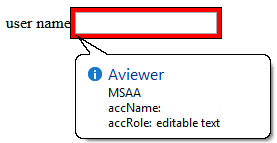
이에 비해 아래 코드 예제 input type=text에서는 'user name'이라는 레이블이 표시되고 접근 가능한 이름이 있습니다. 이 예제에는 input 요소가 레이블 지정 가능한(labelable) 요소이고 label이 레이블 텍스트를 입력과 연결하는 데 올바르게 사용되었기 때문에 접근 가능한 이름이 있습니다.
<!-- Note: use of for/id or wrapping label around text
and control methods will result in an accessible name -->
<input type="text" aria-label="User Name">
or
<span id="p1">user name</span> <input type="text" aria-labelledby="p1">
컨트롤의 MSAA accName 속성에는 "user name" 값이 있습니다.
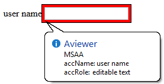
참고: 위의 예는 ARIA 위젯에 대한 것입니다. 일반 HTML 입력의 경우 ARIA의 첫 번째 규칙을 따르고 for 속성이 있는 label 요소를 사용하여 레이블을 input 요소와 연결합니다.
HTML label 요소 및 레이블 지정 가능 요소
다음은 HTML에서 label 사용에 관한 것입니다. ARIA 위젯을 구축하는 경우 ARIA Authoring Practices Document를 참조하세요.
label 요소는 label이 기본 HTML 레이블 지정 가능 요소를 참조하지 않는 한 사용자 정의 컨트롤에 접근 가능한 이름을 제공하는 데 사용할 수 없습니다.
<!-- HTML input element with combox role -->
<label>
user name <input type="text" role="combobox">
</label>
컨트롤의 MSAA accName 속성에는 "user name" 값이 있습니다.
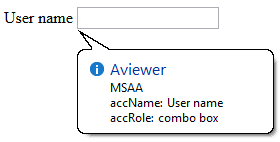
할당된 역할에 관계없이 div 요소는 HTML 레이블 지정 가능 요소가 아닙니다.
<!-- HTML div element with combox role -->
<label>
user name <div role="combobox"></div>
</label>
컨트롤의 MSAA accName 속성이 비어 있습니다.
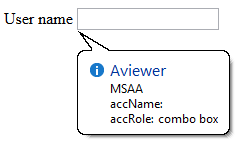
다섯 번째 규칙은 작업 중입니다.
2.6 역할을 추가하면 기본 의미에 어떤 영향을 미치나요?
ARIA 역할을 추가하면 접근성 API를 통해 보고되는 접근성 트리의 기본 역할 의미가 재정의되므로 ARIA는 화면 낭독기나 기타 보조 기술에 보고되는 내용에 간접적으로 영향을 미칩니다.
예를 들어 HTML 트리의 다음 코드는 다음과 같습니다.
<h1 role=button>text</h1>
접근성 트리에서는 다음과 같이 됩니다.
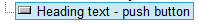
역할을 추가하면 안되는 것
ARIA 역할을 추가해도 보조 기술을 사용하지 않는 사람들에게는 요소가 다르게 보이거나 작동하지 않습니다. 호스트 요소의 동작, 상태 및 속성은 변경되지 않고 기본 역할의 의미만 변경 됩니다.
예를 들어 HTML 트리에서 이 코드는 다음과 같습니다.
<button role=heading aria-level=1>text</button>접근성 트리에서는 다음과 같이 됩니다.
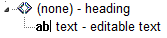
그러나 여전히 누를 수 있고, 여전히 기본 탭 순서에 있으며, 여전히 버튼처럼 보이고, 누르면 관련 작업이 계속 실행됩니다. 이것이 바로 버튼을 제목으로 변경하는 것이 HTML5 준수 오류인 이유입니다.
참고: role 요소의 변경은 사용된 요소에 동작, 속성 또는 상태를 추가하지 않습니다. ARIA는 브라우저에서 표시되거나 작동하는 방식을 변경하지 않습니다. 예를 들어 링크가 버튼처럼 작동하는 데 사용되는 경우 role=button 추가로는 충분하지 않습니다. 또한 기본 버튼이 enter 키나 spacebar를 통해 활성화될 수 있는 것처럼 space 키 입력을 수신하는 키 이벤트 핸들러를 포함하여 기본 버튼처럼 동작하도록 해야 합니다.
2.7 ARIA 추가는 인라인으로? 스크립트로?
ARIA 역할 또는 aria-* 속성이 상호 작용 동작을 제공하기 위해 스크립팅에 의존하지 않는 경우 ARIA 마크업을 인라인으로 포함하는 것이 안전합니다. 예를 들어 ARIA 랜드마크 역할을 추가 하거나 ARIA 라벨 지정 및 속성 설명을 인라인으로 추가하는 것은 괜찮습니다.
콘텐츠와 상호 작용이 스크립팅이 가능한 브라우징 컨텍스트에서만 지원되는 경우, 즉 Google 문서(애플리케이션이 작동하려면 JavaScript가 활성화되어 있어야 함) 애플리케이션은 Javascript가 활성화되지 않은 상태에서 간단히 작동하지 않으므로(누구에게나) ARIA 마크업을 인라인으로 포함하는 것도 안전합니다.
그렇지 않으면 스크립팅을 통해 ARIA를 삽입, 변경 및 제거합니다. 예를 들어 트리 위젯의 접힌 섹션은 다음과 같습니다.
<li role=treeitem aria-expanded=false ...사용자가 섹션을 펼치면 Javascript를 사용하여 섹션이 다음과 같이 변경됩니다.
<li role=treeitem aria-expanded=true ...2.8 ARIA 유효성 검사
가장 쉬운 방법은 ARIA 마크업과 함께 HTML5 DOCTYPE을 사용하고 W3C Nu Markup Checker를 사용하여 유효성을 검사하는 것입니다. ARIA는 다른 DOCTYPE에도 동일하게 작동 하지만, 관련 DTD가 ARIA 마크업을 인식하도록 업데이트되지 않았고 그럴 가능성도 거의 없기 때문에 ARIA 마크업을 발견하면 검증 도구에서 오류가 발생합니다.
HTML5 이전 HTML 버전의 이러한 유효성 검사 오류는 ARIA가 실제 접근성 문제를 일으킨다 는 것을 의미하지 않으며 부정적인 사용자 경험이 있을 것임을 의미하지도 않습니다. 이는 ARIA 접근성 주석을 수용하지 않는 오래된 자동 유효성 검사 테스트의 결과일 뿐입니다.
참고: ARIA 검사를 위한 W3C Nu Markup Checker 지원은 작업 중이므로 올바른 결과를 제공하는 데 전적으로 의존할 수는 없습니다(아주 훌륭하긴 하지만!). ARIA 명세나 HTML 명세의 ARIA 준수 요구 사항과 충돌하는 결과가 발생하는 경우 문제를 제기하는 것이 좋습니다.
2.9 Role=presentation 혹은 Role=none 사용
role=presentation, 또는 그 동의어 role=none은 해당 요소에서 의미를 제거합니다.
예를 들어 HTML 트리에서 이 코드는 다음과 같습니다.
<h1 role="presentation">text</h1>접근성 트리에서는 다음과 같이 됩니다.
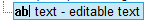
즉, 의미론적 의미가 없는 텍스트 문자열로 접근성 트리에 보고될 뿐입니다.
필수 하위 항목이 없는 요소의 경우 role=presentation/none이 있는 요소 내부에 중첩된 모든 요소는 원래 의미를 유지합니다.
예를 들어 HTML 트리에서 이 코드는 다음과 같습니다.
<h1 role="presentation"><abbr>API</abbr></h1>접근성 트리에서는 다음과 같이 됩니다.
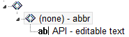
필수 하위 요소(예: ul 또는 table)가 있는 요소의 경우 role=presentation/none이 있는 요소 내부에 중첩된 필수 하위 요소의 의미도 제거됩니다.
예를 들어 HTML 트리에서 이 코드는 다음과 같습니다.
<table role="presentation">
<tr>
<td>
<abbr>API</abbr>
</td>
</tr>
</table>접근성 트리에서는 다음과 같이 됩니다.
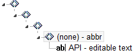
참고: role=presentation/none가 있는 요소의 필수 하위 요소가 아닌 모든 요소는 의미 체계를 유지합니다 . 여기에는 중첩 목록이나 중첩 테이블과 같은 필수 하위 항목이 있는 다른 요소가 포함됩니다.
예를 들어 HTML 트리에서 내부에 중첩된 다른 테이블이 있는 테이블로 구성된 다음 코드는 다음과 같습니다.
<table>
<tr>
<td>
<table>
<tr>
<td>
<abbr>API</abbr>
</td>
</tr>
</table>
</td>
</tr>
</table>접근성 트리에서는 다음과 같이 됩니다.
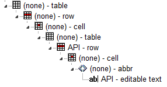
role=presentation/none을 외부 table 요소에 추가하면 HTML 트리에 다음 코드가 표시됩니다.
<table role="presentation">
<tr>
<td>
<table>
<tr>
<td>
<abbr>API</abbr>
</td>
</tr>
</table>
</td>
</tr>
</table>
role=presentation/none을 추가하여 필수 하위 항목(tr 및 td 요소)을 포함한 외부 table은 접근성 트리에서 의미가 제거됩니다
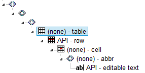
role=presentation/none 사용 예
잘못된 테이블 구조를 수정하는 데 사용
<div aria-readonly="true" role="grid">
<table role="presentation">
<tbody>
<tr role="row">
<th role="columnheader">Dog Names</th>
<th role="columnheader">Cat Names</th>
<th role="columnheader">Cow names</th>
</tr>
</tbody>
</table>
<table role="none">
<tbody>
<tr role="row">
<td role="gridcell">Fido</td>
<td role="gridcell">Whiskers</td>
<td role="gridcell">Clarabella</td>
</tr>
<tr role="row">
<td role="gridcell">Woofie</td>
<td role="gridcell">Claws</td>
<td role="gridcell">Glenn</td>
</tr>
</tbody>
</table>
</div>2.10 실용적 지원: aria-label, aria-labelledby, aria-describedby
이 글을 요약하면 다음과 같습니다.
-
aria-labelledby와aria-describedby는 다양한input유형을 포함한 links 및 양식 컨트롤 과 같은 대화형 콘텐츠 요소 에 대해 강력하게 지원됩니다. -
대부분의 보조 기술의 경우
aria-label또는aria-labelledby를<nav>,<main>요소에 사용할 수 있지만<footer>,<section>,<article>,<header>에서는 사용할 수 없습니다. -
<aside>에는aria-label또는aria-labelledby에 대한 지원이 혼합되어 있습니다. -
Android의 Talkback은
aria-label또는aria-labelledby.가 있는 모든 랜드마크의 콘텐츠를 재정의합니다. -
div요소에role=navigation,role=search,role=main을 사용할 때aria-label또는aria-labelledby를 사용하는 것은 괜찮습니다. 하지만 JAWS는role=banner,role=complementary,role=contentinfo를 지원하지 않습니다. NVDA, VoiceOver 및 Talkback에서는 괜찮습니다. -
aria-label,aria-labelledby,aria-describedby는table,th,td요소에서 잘 작동하지만, 다음 섹션에서 설명하는 NVDA, iOS의 VoiceOver 및 Talkback에 대한 예외가 있습니다. -
헤딩 요소에는
aria-label,aria-labelledby를 사용하지 마세요. NVDA, VoiceOver 및 Talkback에서는 헤딩을 대체하기 때문입니다. JAWS는 이들을 무시합니다. -
대화형이 아닌
p,legend,li,ul과 같은 기타 콘텐츠에는aria-label,aria-labelledby를 사용하지 마세요. 무시됩니다. -
span,div에는role이 지정된 경우가 아니라면aria-label,aria-labelledby를 사용하지 마세요. 대화형 역할(예:link,button) 또는img역할에aria-label나aria-labelledby가 있으면div나span의 내용이 대체됩니다. 랜드마크 역할(위에서 설명한)을 제외한 다른 역할은 무시됩니다. -
span또는div에aria-describedby를 사용하면 대화형role, 이미지 또는 랜드마크role이 지정되지 않은 경우 NVDA와 VoiceOver에서 무시됩니다. JAWS와 Talkback에서는 괜찮습니다. -
aria-describedby는 NVDA와 VoiceOver에서 다른 정적 콘텐츠에 대해 무시됩니다. JAWS와 Talkback에서는 괜찮습니다.
위의 모든 내용은 iframe 요소 에서도 동일하게 작동합니다. aria-label와 aria-labelledby 둘 다 스크린 리더 및 Accessibility API와 동일한 동작을 갖지만 페이지 에 참조할 텍스트가 표시되지 않거나 id 값을 추적하는 것이 너무 어려운 경우를 위해 aria-label이 예약되어야 합니다.
aria-labelledby, aria-label, aria-describedby에 대한 Internet Explorer 참고 사항
Internet Explorer에서 여러 id를 참조하는 aria-labelledby이나 단일 또는 여러 id를 참조하는 aria-describedby를 사용하는 경우 참조된 요소는 Microsoft에서 말하는 접근 가능한
HTML 요소여야 합니다.
다음 예에서는 여러 참조가 있는 aria-labelledby를 사용한 span에 tabindex=-1를 추가합니다. 접근 불가능한 요소를 접근 가능하게 만들기를 참조하십시오.
<label
id="l1"
for="f3">label text</label>
<input type="text" id="f3"
aria-labelledby="l1 l2"
>
<p>other content</p>
<span
tabindex="-1"
id="l2"
>more label text</span>
또한 요소에 ARIA 역할이 있는 경우 Internet Explorer에서 해당 요소는 접근 가능한 HTML 요소가 됩니다 . 예를 들어:
<div aria-describedby="test">text</div>
<div id="test"
role="tooltip"
>tooltip text</div>
콘텐츠를 숨겨도 접근 가능한 이름이나 설명 계산에는 영향을 미치지 않습니다
의도적으로 aria-labelledby 및 aria-describedby가 참조하는 요소의 콘텐츠를 숨기더라도(CSS display:none 또는 visibility:hidden 또는 HTML hidden 속성 사용) 이름/설명을 제공하는데 콘텐츠가 사용되는 것을 막지는 않습니다.
By default, assistive technologies do not relay hidden information, but an author can explicitly override that and include hidden text as part of the accessible name or accessible description by usingaria-labelledbyoraria-describedby.
In the following example the description will be available to assistive technology users in both states:
Non-error state: message visually hidden
<label>Name <input type="text" aria-describedby="error-message"></label>
<span id="error-message" style="display:none">
You have provided an incorrect name</span>
Note: addition of aria-hidden=true to the referenced element makes no difference:
<span id="error-message" style="display:none" aria-hidden="true">
You have provided an incorrect name</span>
Error state: message visible
<span id="error-message" style="display:inline">
You have provided an incorrect name</span>
Methods to Provide Context Sensitive Name/Description Text
If you want to associate context sensitive text, such as an error message, you can:- Add the referenced element to the DOM when the error state occurs.
- Add the error text as child of the referenced element in the DOM when the error state occurs.
- Add the id reference in the DOM to the
aria-labelledby/aria-describedbyattribute, when the error state occurs.
2.10.1 The Effect of Accessible Name on Background Images
Try to avoid presenting informational images in CSS backgrounds. If your image contains important information for the end user, then it should be provided in an HTML <img> tag with proper alt text. The CSS Spec says this:
For accessibility reasons, authors should not use background images as the sole method of conveying important information. See WCAG failure #F3 [WCAG20] . Images are not accessible in non-graphical presentations, and background images specifically might be turned off in high-contrast display modes. Source .
What If You Can't Avoid Using CSS Images or If You Want Alternate Text for "Non-important" Ambient Photos, Etc.?
The CSS spec makes its discouragement of CSS informational background images a "SHOULD" not a "MUST" because there are times when visual design or existing code makes it difficult to change it to an HTML image without redesigning the front-end. Other times the author may want to provide alternate text for an ambient image that is not "important" to the understanding of the content but as a courtesy to screen reader users who prefer knowing what is in the image. Here is a detailed article on ambient images vs pure decoration vs informational images.
When Providing Alternate Text for the CSS Image, There Are Number of Considerations
If the <div> tag has any content inside it, then a role="img" and aria-label could obscure the inside content because of the accessible name calculation, or the assistive technology might just ignore the aria-label.
So do not put the CSS background image inside a <div> that contains any content. It's best to use an empty <span> and an aria-label with role="img"
Do this:
<div>
<span class="background-image" role="img" aria-label="[place alt text here]"> </span>
[all the rest of my content]
</div>
Don't do this:
<div class="background-image" role="img" aria-label="blah blah blah">
[all the rest of my content]
</div>
What If the Author Has to Have a CSS Image on a <div> that Contains Content?
Sometimes there are dependencies in the CSS stack and messing with it can upset the design and layout of the site, or a request to change the code could get hung up in approval from various stakeholders. In cases where the author has to have the background image in the <div> that wraps up other content, then here is a fallback.
<div class="background-image" >
<span role="img" aria-label="[place alt text here]"> </span>
[all the rest of my content]
</div>
This is a hack because semantically the alternate text is not on the element that actually has the image. However, from a screen reader perspective the <div> with the background image is ignored and so placing the <span> directly following it will provide that information in a way that will seem as if the alternate text was in the same place as the background image.
2.11 Using ARIA role=application
How Does role="application" Affect a Screen Reader?
On many popular screen readers today, most keystrokes are captured by the screen reader and not the web page when the user is in browse mode. This is necessary for efficient navigation of a page. As of this writing, when application mode is set, many screen readers stop intercepting keystrokes, and pass all keystrokes directly to the browser. Then the user won't be able to navigate the page as easily. For instance they won't be able to skip around the page by headings or read a paragraph of static text line-by-line. However, several screen readers do not behave differently when there is an application role set.
So When Should I Use It, and When Not?
In determining when to use role=application, one should consider, among other things, the advantages of screen reader keyboard shortcuts weighed against the loss of those features. It generally should not be used, and if it is, usability testing with screen reader users should be conducted.
You do not use role="application" if a set of controls only contains these widgets, that are all part of standard HTML. This also applies if you mark them up and create an interaction model using WAI-ARIA roles instead of standard HTML widgets:
NOTE: It's not recommended that authors develop custom text input widgets. It's almost always best to use the native inputs for these.
-
text box. This also applies to password, search, tel and other newer input type derivatives -
textarea -
check box -
button -
radio button(usually inside a fieldset/legend element wrapper) -
select + option(s) -
links,paragraphs,headings, and other elements that are classic/native to documents on the Web.
You also do not use the application role if your widget is one of the following more dynamic and non-native widgets. Screen readers and other assistive technologies that support WAI-ARIA will support switching between browse and focus modes for these by default too:
-
tree view -
slider -
tablethat has focusable items and is being navigated via the arrow keys, for example, a list of e-mail messages where you provide specific information. Other examples are interactive grids, tree grids, etc. - A list of tabs (
tab, tablist) where the user selects tabs via the left and right arrow keys. Remember that you have to implement the keyboard navigation model for this! -
dialogandalertdialog. These causes some screen readers to go into a sort of application mode (implicitly) once focus moves to a control inside them. Note that for these to work best, set thearia-describedbyattribute of the element whose role isdialogto theidof the text that explains the dialog's purpose, and set focus to the first interactive control when you open it:
<div role="dialog" aria-label="login" aria-describedby="log1"> <div id="log1" tabindex="-1">Provide user name and password to login.</div> ... ... </div> -
toolbarandtoolbar buttons,menusandmenu items, and similar.
You only want to use role=application if the content you’re providing consists of only focusable, interactive controls, and of those, mostly advanced widgets that emulate a real desktop application. Note that, despite many things now being called a web application, most of the content these web applications work with are still document-based information, be it Facebook posts and comments, blogs, Twitter feeds, or even accordions that show and hide certain types of information dynamically. We primarily still deal with documents on the web, even though they may have a desktop-ish feel to them on the surface.
It is not necessary to use role=application to have control-specific keyboard shortcuts while the user is in forms (focus) mode on their screen reader. For instance, a custom control with ARIA role=listbox can easily capture all keys pressed including arrow keys, while the user is interacting with it.
In short: The times when you actually will use role=application will probably be very rare!
So Where Do I Put role=application in the Rare Cases It Is Useful?
Put it on the closest containing element of your widget, for example, the parent div of your element that is your outer most widget element. If that outer div wraps only widgets that need the application interaction model, this will make sure focus mode is switched off once the user tabs out of this widget.
Only put it on the body element if your page consists solely of a widget or set of widgets that all need the focus mode to be turned on. If you have a majority of these widgets, but also have something you want the user to browse, use role=document on the outermost element of this document-ish part of the page. It is the counterpart to role=application and will allow you to tell the screen reader to use browse mode for this part. Also make this element tabbable by setting a tabindex=0 on it so the user has a chance to reach it.
As a rule of thumb: If your page consists of over 90 or even 95 percent of widgets, role=application may be appropriate. Even then, find someone knowledgeable who can actually test two versions of this: One with and one without role=application set to see which model works best.
NEVER put role=application on a widely containing element such as body if your page consists mostly of traditional widgets or page elements such as links that the user does not have to interact with in focus mode. This will cause huge headaches for any assistive technology user trying to use your site/application.
For further information on the use of role=application refer to If you use the WAI-ARIA role "application", please do so wisely!
2.12 Custom Control Accessible Development Checklist:
Check your custom control against the following design considerations. If the answer to any of them is 'No' then consider fixing before release or at least documenting the issues to inform other developers that your custom control will not be usable by some people due to limited accessibility support.
| design Consideration | description | Yes/No |
|---|---|---|
| focusable | Can you get to the control via the keyboard? Refer to Providing Keyboard Focus |
|
| keyboard operable | Can you use the control with the keyboard? Refer to Keyboard Navigation | |
| touch operable | Can you use the control with touch gestures? With assistive technology enabled? | |
| expected operation | Can you operate the control using the standard keys (Refer to ARIA Widget Design Patterns) and/or touch gestures for the control type? | |
| clear indication of focus | Can you easily see it when the control has focus? Refer to Visible Focus (WCAG2) | |
| label | The control has a text label that is exposed as an accessible name in accessibility APIs | |
| role | The control has an appropriate role exposed in accessibility APIs | |
| states and properties | The control has any UI states and properties that it has exposed in accessibility APIs | |
| color contrast | The control label/description/icon is perceivable/usable for low vision users (Use a color contrast checker.) | |
| high contrast mode | The control is perceivable/usable when High Contrast Mode is enabled (e.g. Windows HC mode) |
2.13 ARIA Adds Nothing to Default Semantics of Most HTML Elements
In some cases the semantics of an HTML element can be expressed by an ARIA role, state or property. This is known as the element's 'Default Implicit ARIA semantics'
In the majority of cases setting an ARIAroleand/oraria-*attribute that matches the default implicit ARIA semantics is unnecessary and not recommended as these properties are already set by the browser.
2.13.1 Some Examples of Redundant ARIA
Adding default implicit roles to interactive elements listed in the HTML5 Recommendation is a waste of time:
<button role="button">press me</button>
Adding ARIA state or property attributes in addition to their native HTML counterparts is a waste of time:
<input type="text" required aria-required="true">
<div hidden aria-hidden="true">
Adding ARIA roles and states or properties to long-implemented structural elements is a waste of time:
<h1 role="heading" aria-level="1">heading text</h1>
2.14 Aria Roles and Properties Not Available as Features in HTML
Below are listed the ARIA roles and properties not considered to be available natively in HTML. It is clear that many roles and properties provided by ARIA, which can be used to convey information to users, are not available in HTML.2.14.1 ARIA Roles
2.14.2 ARIA States and Properties (aria-* Attributes)
-
aria-activedescendant -
aria-atomic -
aria-busy(state) -
aria-controls -
aria-describedby -
aria-dropeffect -
aria-expanded(state) -
aria-flowto -
aria-grabbed(state) -
aria-haspopup -
aria-hidden(state) -
aria-label -
aria-labelledby -
aria-level -
aria-live -
aria-orientation -
aria-owns -
aria-posinset -
aria-pressed(state) -
aria-relevant -
aria-setsize -
aria-sort
2.15 ARIA Design Patterns and Touch Device Support
The ARIA Design Patterns in WAI-ARIA Authoring Practices 1.1 describe how to implement custom UI elements so that they are usable by keyboard only users and understandable to users of assistive technology. Some of the ARIA design patterns currently specify, and rely on, keyboard-specific event handling. This is not supported on devices which only provide a touch screen, and has limited or no support (depending on the specific operating system) on mobile phones/tablets with an additional physical keyboard. An in progress ARIA design patterns - touch UA/AT gap analysis (Google sheet) is available (Also available as a static file in .ods format). Related WAI-ARIA Authoring Practices 1.1 issue
2.16 Recommendations Table:
Refer to the Document conformance requirements for use of ARIA attributes in HTML table in the ARIA in HTML specification.
2.17 ARIA Role, State, and Property Quick Reference
Refer to the Allowed ARIA roles, states and properties table in the ARIA in HTML specification.